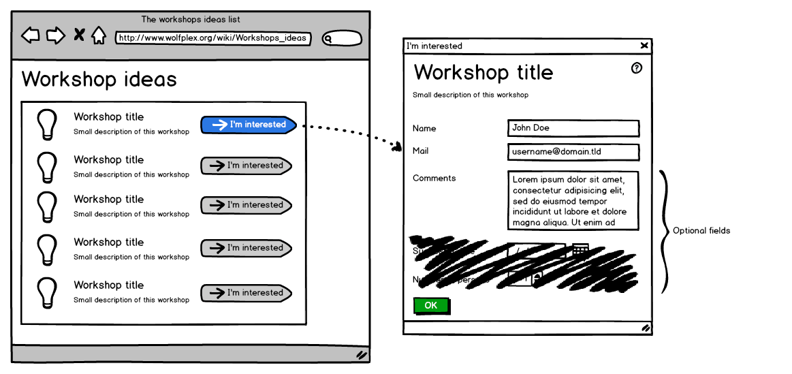

Session 5 — Page Layouts
Give the page a skeleton before you decorate it.
canvases/buoi-05.canvas.tsxebook/05-creating-page-layouts.mdslides/05-creating-page-layouts.mdexercises/session-05/exercise.mdhomework/session-05/Session 5 — Page Layouts
Slide 1 of 32 #Creating Page Layouts
Semantic HTML5 elements, display types, and Flexbox — building a two-column page skeleton.
Speaker notes
Learning Objectives
Slide 2 of 32 #Learning Objectives
1. Use semantic HTML5 elements (header, nav, main, section, aside, footer)
2. Explain block vs inline vs inline-block display types
3. Create layouts using Flexbox (display: flex)
4. Control alignment with justify-content and align-items
5. Build a complete two-column layout (main + sidebar)
6. Wrap a page in a centred container with max-width
Today's Agenda
Slide 3 of 32 #150-Minute Session Plan
Welcome, objectives, and warm-up recap
Recap: What did we learn in Session 4?
Semantic HTML5 elements + live demo
Display types & box model property table
Flexbox basics, axes, worked examples
In-class practice (exercises/session-05)
Homework briefing + recap + next session
Warm-Up: Session 4 Recap
Slide 4 of 32 #Quick Check — What Do You Remember?
Discuss with your neighbour for 2 minutes, then share answers.
Semantic HTML5
Slide 5 of 32 #Semantic HTML5 Elements
The two pages below look identical in the browser. Only one of them can be understood by a screen reader or a search engine.
Draw Before You Code
Slide 6 of 32 #Draw Before You Code

Wireframe: Dereckson — CC BY 3.0, Wikimedia Commons
A wireframe is a sketch of boxes that represent your layout regions.
Professionals sketch on paper before writing any code.
Each box you draw becomes one <div> or semantic tag (<header>, <nav>, <main>, <aside>, <footer>).
Sketching first saves an hour of rewriting CSS when you realise the layout is wrong.
Speaker notes
Semantic Element Reference
Slide 7 of 32 #Semantic HTML5 Quick Reference
<header> — Site title, logo, banner area
<nav> — Navigation links (menu, breadcrumbs)
<main> — Primary page content (one per page!)
<section> — Thematic group with a heading
<article> — Self-contained content (blog post)
<aside> — Sidebar, tangential content
<footer> — Copyright, contact info
Only ONE <main> per page.
Never use <section> as a generic wrapper — that is what <div> is for.
<nav> should contain navigation links, not random content.
Why Semantic HTML Matters
Slide 8 of 32 #Three Reasons to Go Semantic
Screen readers announce "navigation region" at <nav>, helping blind users navigate quickly.
Search engines give more weight to content inside <main> and <article>.
When you read <header>, you know what it is. No guessing from class names.
Both pages render identically with CSS. But only the semantic version communicates structure to assistive technology and search engines.
Region to Tag to CSS
Slide 9 of 32 #Region → Tag → CSS That Shapes It
The five regions of the classic CodeBreakers layout and the CSS that sizes each one.
Header
Nav bar
Main content
Sidebar
Footer
<header> (#header)
<nav> (#nav)
<main> (#content)
<aside> (#sidebar)
<footer> (#footer)
width 100%, height, background
float left or full-width strip
width ~70%, float left (or flex: 3)
width ~30%, float right (or flex: 1)
clear: both, full width
Speaker notes
Display Types
Slide 10 of 32 #Block, Inline, and Inline-Block
Box Model Properties
Slide 11 of 32 #Box Model Property Reference
Four Layers (inside out)
Content — text, images, child elements
Padding — space between content and border
Border — visible line around padding
Margin — space outside border, separates elements
Key Properties
box-sizing: border-box — padding+border count inside width
margin: 0 auto — centres a block with defined width
max-width — limits element width, shrinks on small screens
min-height: 100vh — at least full viewport height
Flexbox Basics
Slide 12 of 32 #Flexbox — One-Dimensional Layout
Apply display: flex to the parent container.
Main axis — direction items flow (row by default).
Cross axis — perpendicular to main axis.
Flex items — only direct children are affected.
1main {2 display: flex; /* activates flexbox on children */3}Key Flex Properties
Slide 13 of 32 #Container & Item Properties
Container
justify-content — main axis alignment
align-items — cross axis alignment
flex-direction — row | column
flex-wrap — nowrap | wrap
gap — space between items
Item
flex-grow — grow ratio relative to siblings
flex-shrink — shrink when space is tight
flex-basis — starting size before grow/shrink
Shorthand: flex: grow shrink basis
Quick Check
Slide 14 of 32 #Discussion: Think About It
Raise your hand when you have an answer. We will discuss together.
Try It Now: Build a Flex Layout
Slide 15 of 32 #Five minutes — create a two-column layout
Type this into layout.html
1<div class="container">2 <header>My Club</header>3 <div class="content">4 <main>5 <h2>Welcome</h2>6 <p>Main content goes here.</p>7 </main>8 <aside>9 <h3>Sidebar</h3>10 <p>Links and info.</p>11 </aside>12 </div>13 <footer>© 2025 My Club</footer>14</div>Then add this CSS
1.container {2 max-width: 1200px;3 margin: 0 auto;4}56.content {7 display: flex;8 gap: 20px;9}1011main { flex: 3; }12aside { flex: 1; }Worked Example: Two-Column Layout
Slide 16 of 32 #Worked Example: Semantic Layout with Flexbox
1<!-- index.html -->2<header>3 <h1>Student Technology Club</h1>4</header>5<nav>6 <ul>7 <li><a href="index.html">Home</a></li>8 <li><a href="about.html">About</a></li>9 </ul>10</nav>11<main>12 <section>13 <h2>Welcome</h2>14 <p>Club content here...</p>15 </section>16 <aside>17 <h3>Quick Links</h3>18 <ul><li><a href="#">Calendar</a></li></ul>19 </aside>20</main>21<footer>© 2025 Student Tech Club</footer>What each part does:
<header> — site title at the top (block, full width).
<nav> — horizontal link bar below header.
<main display:flex> — makes section + aside sit side by side.
<section> — main articles area (grows to fill space).
<aside flex:1> — sidebar takes remaining width.
<footer> — copyright at the bottom.
No wrapper div needed! display:flex goes directly on <main>.
1main { padding: 20px; max-width: 960px; margin: 0 auto;2 display: flex; gap: 20px; }3aside { background-color: #ecf0f1; padding: 15px;4 border-radius: 4px; flex: 1; }Worked Example: Horizontal Nav Bar
Slide 17 of 32 #Worked Example: Horizontal Navigation with Flexbox
1nav ul {2 list-style: none;3 margin: 0; padding: 0;4 display: flex;5 justify-content: center;6 background-color: #2874a6;7}8nav ul li a {9 display: block;10 color: white;11 text-decoration: none;12 padding: 12px 20px;13 transition: background-color 0.3s;14}15nav ul li a:hover {16 background-color: #1a5276;17}Line-by-line:
list-style: none — removes bullet points from <ul>.
display: flex on <ul> — list items sit in a row.
justify-content: center — centres nav links in the bar.
display: block on <a> — entire padding area clickable.
transition — smooth 0.3s colour animation on hover.
Result: Centred horizontal nav bar with smooth hover effects.
Three Layout Patterns
Slide 18 of 32 #Three Layout Patterns
1.wrapper {2 max-width: 700px;3 margin: 0 auto;4}Simplest layout. One centred column of content.
Good for: notices page, short announcements.
1.page-body {2 display: flex;3}4main { flex: 3; }5aside { flex: 1; }Header + nav + main beside sidebar + footer.
Good for: most CodeBreakers club pages.
1section {2 width: 100%;3 padding: 40px 0;4}Stacked horizontal bands, each full width.
Good for: modern landing page look.
Speaker notes
Common Mistakes
Slide 19 of 32 #Common Mistakes (and How to Fix Them)
Debug This
Slide 20 of 32 #This layout has three bugs. Find them.
Buggy CSS
1.container {2 display: flex;3 flex-direction: row;4}56.main {7 flex: 3;8}910.sidebar {11 flex: 1;12}1314footer {15 background-color: #333;16 color: white;17}Bugs
1. No max-width on .container — on wide screens, content stretches edge to edge. Add max-width: 1200px and margin: 0 auto.
2. No gap or padding between .main and .sidebar — text touches the edge. Add gap: 20px to the flex container.
3. footer is outside the flex container — it will not respect the flex layout. Move it inside .container or use a separate flex row.
Session 5 Summary
Slide 21 of 32 #Concept Summary Table
Semantic HTML — Elements that describe their meaning
display: block — Full width, new line, accepts dimensions
display: inline — Content width, no line break, no dimensions
display: flex — Activates Flexbox on container
justify-content — Main axis alignment
align-items — Cross axis alignment
flex: 3 / flex: 1 — Proportional column widths
Wrapper — max-width + margin: 0 auto for centring
Float vs Flexbox
Slide 22 of 32 #Legacy Knowledge: Float vs Flexbox
Float (Legacy)
Originally for wrapping text around images.
Vertical alignment: difficult.
Equal height columns: requires hacks.
Requires clearfix on parent.
Not recommended for new projects.
Flexbox (Modern)
Designed specifically for layout.
Vertical alignment: easy (align-items).
Equal height columns: automatic.
gap property replaces margin hacks.
Use this for all new layouts.
Worked Example: Sticky Footer
Slide 23 of 32 #Bonus Pattern: Sticky Footer with Flexbox
1.wrapper {2 display: flex;3 flex-direction: column;4 min-height: 100vh;5}67.page-body {8 flex: 1; /* grows to fill space */9 display: flex; /* nested flexbox! */10}How it works:
flex-direction: column — wrapper stacks header, nav, page-body, footer vertically.
min-height: 100vh — wrapper is at least viewport height.
page-body flex: 1 — grows to fill remaining vertical space, pushing footer down.
Nested flexbox — page-body is ALSO a horizontal flex container for main + aside.
Result: Footer always at bottom, even with short content. No JavaScript needed.
Self-Assessment
Slide 24 of 32 #Check Your Understanding
1. Name five semantic HTML5 elements
2. Explain block vs inline display
3. Activate Flexbox on a container
4. Use justify-content correctly
5. Use align-items correctly
6. Create two-column layout with flex ratios
7. Centre a wrapper with max-width + margin: 0 auto
8. Explain why Flexbox beats floats
If you answered "No" to any item, re-read that section in ebook chapter 5 and redo the corresponding practice task.
Self-Study Check
Slide 25 of 32 #Self-Study Check
Answer these five questions before moving to practice. Answers are in the speaker notes.
Stuck? Re-read the Region → Tag → CSS slide or ebook section 4.
Speaker notes
Hands-On Practice
Slide 26 of 32 #In-Class Practice (≈ 55 min)
Open exercises/session-05/exercise.md in your project folder.
Learn About Semantic HTML
Fill In the Layout Structure
Understand the Box Model
Update index.html with the Same Structure
Create layout.html with semantic elements, add CSS box-model rules, then update index.html to share the same structure.
Practice Checkpoints
Slide 27 of 32 #How to Know Each Task Is Done
You can name 5 semantic HTML5 elements and explain when to use each one.
Your layout.html has header, nav, main, aside, and footer — all visible in the browser.
Open DevTools → inspect the box model — you can see margin, border, padding, and content for each element.
Your index.html shares the same semantic structure as layout.html.
Assignment: Semantic Layout
Slide 28 of 32 #Start in class — finish for homework
Deliverable
A semantic page layout for your Student Club Website.
Acceptance criteria
<header> with club name and logo.
<nav> with horizontal links (Home, About, Contact).
<main> with centered content (max-width + margin: auto).
<footer> with copyright text.
Before you submit
Right-click → Inspect — do you see semantic tags (not just div)?
Resize the browser — does the layout hold at different widths?
Validate HTML at validator.w3.org.
Layout: Do vs Don't
Slide 29 of 32 #Do vs Don't
Do
Use header, nav, main, section, article, footer
Reach for Flexbox for one-dimensional layout
Set box-sizing: border-box once, globally
Sketch the layout on paper before writing CSS
Use gap for spacing between flex children
Don't
Wrap everything in <div> when a semantic tag exists
Use <table> or float for page layout
Put more than one <main> on a page
Fight the box model with negative margins
Add margin to every child instead of gap on the parent
Semantic Tags Are Accessibility Landmarks
Slide 30 of 32 #Why the Tag Name Matters to a Screen Reader
<header> becomes the banner landmark — the user can jump straight to it.
<nav> becomes the navigation landmark. Screen readers list all landmarks so users can skip to the menu.
<main> is the "skip to content" target. One per page, wrapping the unique content only.
<footer> becomes contentinfo — where users expect contact details and copyright.
<section> with a heading becomes a navigable region. Without a heading it is just a div with extra steps.
Homework
Slide 31 of 32 #Homework 5 — Page Layout with Semantic HTML
See homework/session-05/homework.md for full requirements.
Build a page layout for project/index.html using semantic HTML elements:
<header> (club name), <nav> (Home, About, Contact), <main> (content), <footer> (copyright).
Style the layout with CSS: header background/color/padding, horizontal nav links, centered main content with max-width, styled footer.
General cleanup: remove default body margins, full-width layout.
Recap & Next
Slide 32 of 32 #Recap
Semantic HTML gives meaning: header, nav, main, aside, footer.
Block elements stack vertically; inline elements flow within text.
Flexbox arranges items in one dimension — row or column.
justify-content = main axis, align-items = cross axis.
Use flex ratios (flex: 3 / flex: 1) for proportional columns.
Next Session
Session 6: Multi-page sites and navigation — building About, Events, Gallery, and Contact pages with active-class highlighting and shared CSS.